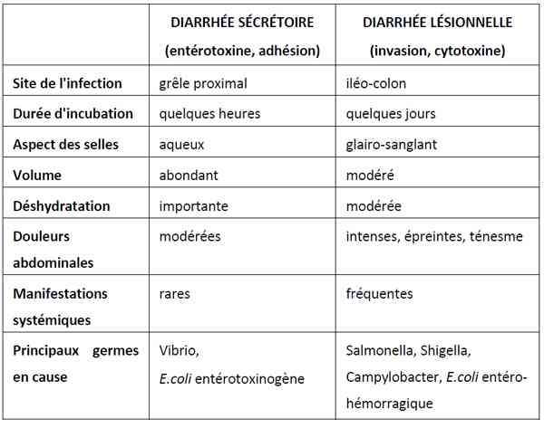
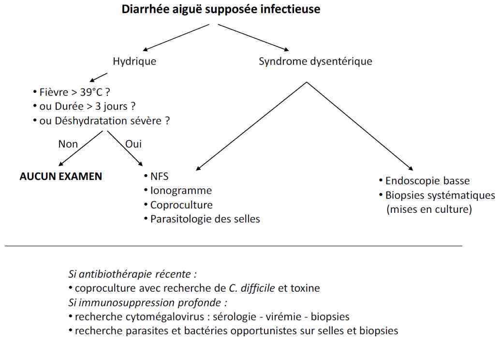

Bienvenue Sur Medical Education
Gastro-entérite aiguë de l'adulte
Spécialité : gastro-enterologie / infectieux /
Points importants
-
Définition : inflammation des muqueuses gastrique et intestinale pouvant être causée par une multitude d'agents pathogènes
-
3 millions de consultations annuelles en France
-
3 millions de décès annuels dans les pays en voie de développement
-
Gravité liée aux troubles hydro-électrolytiques plus souvent qu’au sepsis
-
Distinguer les tableaux dysentériques (diarrhée glairo-sanglante, fièvre) et les tableaux entérotoxiniques (diarrhée aqueuse, profuse)
-
Environ 50% des gastroentérites aiguës sont d’origine virale
-
Une diarrhée banale de moins de 3 jours ne nécessite aucun examen complémentaire et au plus un traitement par lopéramide
Présentation clinique / CIMU
SIGNES FONCTIONNELS
Présentation clinique / CIMU
SIGNES FONCTIONNELS
Généraux
- Légère fièvre < 38°C
- Céphalées
- Anorexie
Spécifiques
-
Diarrhée très aqueuse :
- fréquence, couleur, quantité, consistance des selles
- associée à du sang et/ou à des glaires (dû à des ulcérations coliques par infection bactérienne, inflammation, ischémie)
- Crampes abdominales
- Nausées, vomissements d'apparition brutale
-
Signes de déshydratation :
- sécheresse de la bouche, soif
- lipothymies
- urines moins fréquentes et plus foncées que d'habitude
- perte de poids
Distinguer 2 tableaux
- Diarrhée lésionnelle (syndrome dysentérique)
- Diarrhée sécrétoire (syndrome entérotoxinique)
 _948 Tableau Diarrhée lésionnelle vs sécrétoire
CONTEXTE
Terrain à risque
-
Sujets ayant un système immunitaire affaibli :
- par une maladie (infection au VIH) ou un médicament
- personnes âgées
Traitement
- Chimiothérapie récente (< 15 jours)
- Antibiothérapie récente (< 8 semaines)
Antécédents
- De diarrhée
- Intervention abdominale chirurgicale récente
- Radiothérapie
- Allergie médicamenteuse ou alimentaire
Circonstances de survenue
- Contexte épidémique saisonnier
- Cas dans l’entourage
- Toxi-infection alimentaire collective (au moins 2 cas, déclaration obligatoire)
- Voyage récent
-
Recherche d'intoxication alimentaire :
- viande crue ou peu cuite, fruits de mer crus
- eau ou glaçons contaminés
- champignons vénéneux
- conserves alimentaires artisanales mal stérilisées
- légumes et fruits frais contaminés par insecticides et non lavés avant ingestion
- Milieu clos (hôpital, avion, croisière, dortoir, camp de vacances, etc.). En moyenne, 50 % de la population présente dans un épisode de gastroentérite développe les symptômes
- Autres personnes avec mêmes symptômes dans l'entourage
- Recrudescence virale en décembre, janvier et février
EXAMEN CLINIQUE
- Recherche de signes de déshydratation
- Céphalées, myalgies
-
Abdominal :
- palpation, auscultation (BHA)
- TR (recherche de sang, mucus, abcès, fistule)
-
Cardiovasculaire :
- HoTA
EXAMENS PARACLINIQUES SIMPLES
- SpO2
- ECG
CIMU
- Tri 2 à 5 en fonction de la clinique (conscience, HoTA)
Signes paracliniques
BIOLOGIQUE
-
Une diarrhée banale de moins de 3 jours ne nécessite aucun examen complémentaire et au plus un traitement par lopéramide
Coproculture
-
Indications :
- syndrome dysentérique
- diarrhée aiguë avec fièvre élevée
- persistance de la diarrhée plus de 3 jours
- Prélèvement avant le début d'une antibiothérapie
- Les selles doivent être ensemencées dans les 2 heures suivant leur collection ou, à défaut, être conservées à +4°C pendant 12 heures au maximum
-
La feuille de demande d'examen doit mentionner s'il s'agit :
- d'une coproculture standard : dans ce cas, seront réalisées systématiquement les recherches de Salmonelles, Shigelles, Campylobacter et Yersinia.
- ou d'une coproculture orientée : dans ce cas, préciser le contexte et les recherches souhaitées et notamment la recherche de Clostridium Difficile et de ses toxines en cas d’antibiothérapie de moins de 8 semaines
- 2% des coprocultures demandées reviennent positives
-
Leucocytes :
-
présents dans :
- 80-90% des infections à Shigella et Salmonella
- colite ulcéreuse, Crohn
-
absents dans :
- infections virales
- infections à E Coli
-
présents dans :
Examen parasitologique des selles
-
Indications si survenue après séjour en zone endémique de :
- syndrome dysentérique
- diarrhée aiguë avec fièvre élevée
- persistance de la diarrhée plus de 3 jours
- Prélèvement frais
NFS, plaquettes
- Hyperleucocytose si Salmonelles ou normo ou leucopénie si Shigelles
- Eosinophilie si infection parasitaire
Ionogramme sanguin, urée, créatinine
- Niveau de déshydratation, hypokaliémie, acidose métabolique avec hyperkaliémie
ENDOSCOPIE
- Rectosigmoïdoscopie + biopsies indiquées si syndrome dysentérique
- Préparation par lavements
IMAGERIE
- Indiquée si syndrome obstructif ou suspicion de perforation
Diagnostic étiologique
GASTRO-ENTERITES VIRALES (environ 50%)
Norovirus
- Incubation 12-48h
-
Clinique :
- nausées, vomissements incontrôlés à début brutal
- diarrhée modérée
- céphalées
- fièvre (50%), frissons
- myalgies
- pendant 12 à 60 h
Calicivirus
Rotavirus
- Surtout chez l'enfant
- Peut entraîner une déshydratation importante
Autres
- Adenovirus, parvovirus, astrovirus, coronavirus, pestivirus, torovirus
BACTERIENNES (15-20%)
- Shigella, Salmonella, C jejuni, Yersinia enterocolitica, E coli, V cholera, Aeromonas, B cereus, C difficile, Clostridium perfringens, Listeria
PARASITAIRES (10-15%)
- Giardia
- Amibiase,
- Cryptosporidium
- Cyclospora
MEDICAMENTS
- Antibiotiques
- Laxatifs
- Colchicine
- Quinidine
- Lactulose
- Anti-acides
- Chimiothérapie
- Biguanides
- Veinotoxiques
- Acides biliaires
COLITES PSEUDOMEMBRANEUSES
AUTRES CAUSES
- Colite ischémiques
- Colite ulcéreuse
- Crohn
- Tumeur carcinoïde
- Syndrome du grêle court
- Irradiation ou chimiothérapie
Diagnostic différentiel
- Appendicite
- Botulisme
- Choc hypovolémique
- Syndrome obstructif
Traitement
TRAITEMENT PREHOSPITALIER / INTRAHOSPITALIER
-
La majorité des gastroentérites aiguës ne nécessitent aucun traitement étiologique et guérissent spontanément en 3 à 4 jours
-
La déshydratation peut être mortelle et doit être prévenue et traitée d’urgence
Stabilisation initiale
- 1 ou 2 VVP de gros calibre
- Si déshydratation sévère : 1-2 L de G5% et 500 mL de NaCl 0,9% avec 50 mEq de bicarbonate et 10-20 mEq de KCl en 30-45 min (attention au patient suspect d'insuffisance cardiaque congestive)
- Eventuellement KCl en IVSE (20 mEq en 1 heure)
Suivi du traitement
-
Précautions pour éviter la propagation de l'infection :
- lavage des mains
- isolement du patient
- port de gants, de surblouse
- Réhydratation orale si possible
- Antipyrétique
- Antalgique
- Antiémétique si nausées, vomissements
-
Anti-diarrhéiques :
- si diarrhée importante non sanglante
-
Antibiotiques :
- non indiqués si diarrhée d'origine toxique
- dans les gastro-entérites infectieuses, les fluoroquinolones sont les médicaments empiriques de choix (contre-indication chez la femme enceinte)
- si infection à campylobactéries : érythromycine (mal toléré si le patient a des vomissements)
- si infection à Clostridium difficile : métronidazole
- si infection parasitaire (Giardia, Entamoeba) : métronidazole
MEDICAMENTS
Antibiotiques
-
Ciprofloxacine (fluoroquinolone) :
- en première intention si traitement empirique ou si salmonelle, E Coli, Shigelle ou Yersinia
- 500 mg x 2 PO pendant 3-5 jours
-
Trimethoprim-sulfamethoxazole (Bactrim) :
- en 2e intention si traitement empirique (mais non efficace si Campylobacter)
Antidiarrhériques
- Lopéramide: 4 mg PO d'emblée puis 2 mg après chaque selle liquide, sans dépasser 16 mg/j
Surveillance
CLINIQUE
-
PA, FC, SpO2
-
Selles (quantification de la diarrhée : nombre de selles/j, consistance, volume de chaque selle)
PARACLINIQUE
-
Ionogramme sanguin
-
NFS
Devenir / orientation
CRITERES D'ADMISSION
-
Déshydratation majeure
-
Troubles électrolytiques
-
Sepsis
CRITERES DE SORTIE
-
Bon état clinique
ORDONNANCE DE SORTIE
-
Repos, au lit idéalement
-
Ne pas manger ou boire durant quelques heures
-
Ensuite, boire un équivalent de 8 à 16 verres/j de petites gorgées d'eau ou de boisson type coca dégazéifié
-
Solution de réhydratation :
-
industrielle :
-
type soluté de réhydratation de l'OMS ou soluté pédiatrique
-
artisanale :
-
mélanger un litre d'eau stérile (bouillie refroidie), 6 cuillerées à café de sucre et 1 cuillérée à café de sel
-
ou mélanger 360 mL de jus d'orange non sucré à 600 mL d'eau bouillie refroidie, additionnée de 1/2 c. à café de sel
-
les solutions se conservent 12 heures à température ambiante et 24 heures au réfrigérateur
-
Pas d'alcool ou de boisson contenant de la caféine (augmentation des pertes d'eau et de sels minéraux)
-
Réintroduire progressivement une alimentation solide :
-
tant que la diarrhée et les douleurs abdominales persistent, éviter d'ingérer :
-
les produits laitiers
-
les jus d'agrumes
-
la viande
-
les plats épicés
-
les friandises
-
les aliments riches en gras
-
les aliments qui contiennent de la farine de blé (pain, pâtes, pizza, etc.)
-
le maïs et le son, qui sont riches en fibres
-
les fruits (à l'exception des bananes) et légumes crus
-
réintroduire :
-
en premier lieu les féculents (riz blanc, céréales sans sucre, pain blanc)
-
ajouter graduellement les fruits et légumes, yaourts, puis les aliments protéinés (viande maigre, poisson, oeufs, fromage, etc.)
-
Antiémétique, antibiotique, antidiarrhéïque si besoin (voir dans « Traitement »)
RECOMMANDATIONS DE SORTIE
Devenir / orientation
CRITERES D'ADMISSION
- Déshydratation majeure
- Troubles électrolytiques
- Sepsis
CRITERES DE SORTIE
- Bon état clinique
ORDONNANCE DE SORTIE
- Repos, au lit idéalement
- Ne pas manger ou boire durant quelques heures
- Ensuite, boire un équivalent de 8 à 16 verres/j de petites gorgées d'eau ou de boisson type coca dégazéifié
-
Solution de réhydratation :
-
industrielle :
- type soluté de réhydratation de l'OMS ou soluté pédiatrique
-
artisanale :
- mélanger un litre d'eau stérile (bouillie refroidie), 6 cuillerées à café de sucre et 1 cuillérée à café de sel
- ou mélanger 360 mL de jus d'orange non sucré à 600 mL d'eau bouillie refroidie, additionnée de 1/2 c. à café de sel
- les solutions se conservent 12 heures à température ambiante et 24 heures au réfrigérateur
-
industrielle :
- Pas d'alcool ou de boisson contenant de la caféine (augmentation des pertes d'eau et de sels minéraux)
-
Réintroduire progressivement une alimentation solide :
-
tant que la diarrhée et les douleurs abdominales persistent, éviter d'ingérer :
- les produits laitiers
- les jus d'agrumes
- la viande
- les plats épicés
- les friandises
- les aliments riches en gras
- les aliments qui contiennent de la farine de blé (pain, pâtes, pizza, etc.)
- le maïs et le son, qui sont riches en fibres
- les fruits (à l'exception des bananes) et légumes crus
-
réintroduire :
- en premier lieu les féculents (riz blanc, céréales sans sucre, pain blanc)
- ajouter graduellement les fruits et légumes, yaourts, puis les aliments protéinés (viande maigre, poisson, oeufs, fromage, etc.)
-
tant que la diarrhée et les douleurs abdominales persistent, éviter d'ingérer :
- Antiémétique, antibiotique, antidiarrhéïque si besoin (voir dans « Traitement »)
RECOMMANDATIONS DE SORTIE
Conseils pour prévenir l'intoxication alimentaire
- Bien cuire les aliments, surtout la viande rouge, la volaille et les oeufs et réfrigérer les restes dans les 2 heures qui suivent la cuisson
- Rincer à l'eau du robinet les fruits et légumes consommés frais
- Ne pas cuisiner sur une surface qui est entrée en contact avec de la viande ou de la volaille crue (utiliser une planche pour découper la viande crue et une autre pour les légumes)
- Bien nettoyer les ustensiles de cuisine après les avoir utilisés
- Manger des produits laitiers préférablement pasteurisés
- La température du réfrigérateur ne doit pas dépasse 4 °C
- Lors de la préparation artisanale de conserves alimentaires, stériliser les contenants scellés à la température requise selon le type d'aliment
- Ne pas goûter le contenu de boîtes de conserve dont le couvercle est bombé ou qui a une odeur suspecte
- En voyage dans un pays où les conditions sanitaires sont précaires, boire seulement l'eau en bouteille, des boissons gazeuses, de la bière ou du vin préférablement à la bouteille ou avec une paille ainsi que du thé et du café faits avec de l'eau bouillie
Mesures d'hygiène
- Laver ses mains surtout avant de manger, avant de préparer les repas, après être allé aux toilettes
- Laver les vêtements ou tout objet salis par la diarrhée ou les vomissements avec un javellisant au chlore
- Ne pas partager d'ustensiles ou de nourriture avec une personne qui a la gastro-entérite
- Ne pas partager de serviettes de bain
- Eviter tout contact direct avec un sujet qui a la gastro-entérite
Revenir aux urgences si
- Diarrhée sanglante
- Aggravation de la douleur abdominale
- Vomissements importants
Voir son médecin traitant si la diarrhée persiste plus de 10 jours
Mécanisme / description
-
Diarrhée provoquée par des agents infectieux par adhérence, invasion de la muqueuse, production d'entérotoxines et/ou production de cytotoxines
-
Ces mécanismes entraînent une augmentation de sécrétion et/ou une diminution de l'absorption liquidienne. Ceci induit une déshydratation, une perte d'électrolytes et de nutriments.
-
Intoxication bactérienne : entre 1 et 12 h
-
intoxication par des toxines chimiques : 30 min
-
intoxication virale : entre 12 et 24 heures
-
Agents responsables :
-
virus (plus de 50 % des gastro-entérites)
-
bactéries (Salmonella, Shigella, Campylobacter, E. coli, Yersinia et Vibrio cholerae) : 10 % des gastroentérites hivernales
-
parasites (Giardia, Cryptospridium, amibes ...)
-
Transmission essentiellement par voie digestive :
-
directe de personne à personne
-
indirecte par consommation d'eau, d'aliments ou d'objets souillés
-
Mécanismes par lesquels les bactéries peuvent entraîner une infection :
-
inoculum : la quantité d'agents pathogènes nécessaires pour entraîner une infection varie selon les espèces
-
adhérence : les bactéries adhèrent à la muqueuse intestinale et entrent en compétition avec la flore endogène
-
Production de toxines :
-
entérotoxine : le Vibrio cholerae produit une toxine qui augmente l'AMPc ce qui augmente la sécrétion de Cl- et l'absorption de Na+ qui entraîne donc des pertes d'eau et d'électrolytes importantes
-
cytotoxine : entraîne une destruction cellulaire à pus et sang dans les selles (ex : Shigella dysenteriae, Vibrio parahaemoluticu et Clostridium difficile)
-
neurotoxine : toxine formée en dehors de l'organisme avant l'ingestion (ex : Staphylococcus aureus et le Bacillus cereus)
-
Invasion de la paroi intestinale par l'agent pathogène
Algorithme
- intoxication par des toxines chimiques : 30 min
- intoxication virale : entre 12 et 24 heures
- virus (plus de 50 % des gastro-entérites)
- bactéries (Salmonella, Shigella, Campylobacter, E. coli, Yersinia et Vibrio cholerae) : 10 % des gastroentérites hivernales
- parasites (Giardia, Cryptospridium, amibes ...)
- directe de personne à personne
- indirecte par consommation d'eau, d'aliments ou d'objets souillés
- inoculum : la quantité d'agents pathogènes nécessaires pour entraîner une infection varie selon les espèces
- adhérence : les bactéries adhèrent à la muqueuse intestinale et entrent en compétition avec la flore endogène
- entérotoxine : le Vibrio cholerae produit une toxine qui augmente l'AMPc ce qui augmente la sécrétion de Cl- et l'absorption de Na+ qui entraîne donc des pertes d'eau et d'électrolytes importantes
- cytotoxine : entraîne une destruction cellulaire à pus et sang dans les selles (ex : Shigella dysenteriae, Vibrio parahaemoluticu et Clostridium difficile)
- neurotoxine : toxine formée en dehors de l'organisme avant l'ingestion (ex : Staphylococcus aureus et le Bacillus cereus)
Algorithme
 _949 Algorithme Algorithme : gastro-entérite aiguë
Bibliographie
-
A. Diskin. http://emedicine.medscape.com
-
Dray X, Marteau P. Diarrhée aiguë de l’adulte. Rev Prat. 2006 Oct 31;56(16):1811-6.
Auteur(s) : Patrick PLAISANCE, Xavier DRAY